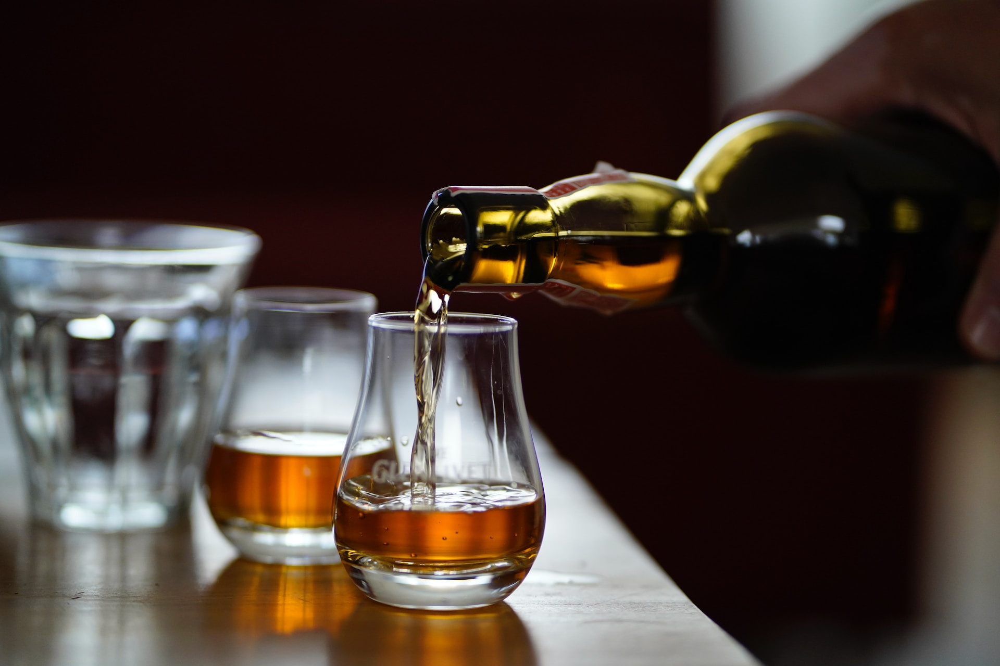

{% extends 'base.html' %}

{% block content %} 
<section class="bg-dark">
    <div>
          
        <div class="profile-text-background bg-dark text-light bg-opacity-50 w-100 p-5 my-5" style="position: absolute; top: 30%; align-items: center">
            {% block user_function %}
            {% endblock %}
    </div>
</section>
{% endblock %}